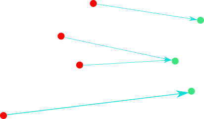
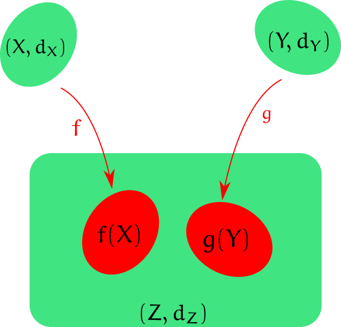

Shape Comparison and Gromov-Hausdorff Distance
Sushovan MAJHI
Tulane UniversityJanuary 21, 2020

smajhi.com/gh-presentation
The Manifest
- Introduction to Shape Comparison
- Hausdorff Distance
- Gromov-Hausdorff Distance
- Computing the Gromov-Hausdorff Distance
- 🍕 Pizza, Discussions, and Questions
Collaborators

Carola Wenk
Computer Science, Tulane

Jeff Vitter
Computer Science, University of Mississippi
Shape Comparison
1. Distinguish Shapes

circle

triangle
2. Classify Shapes

triangular

circular


Map Contruction from GPS data (Berlin)
https://mapconstruction.org
We need an appropriate notion of a distance measure $d_?(X,Y)$ so that
- $d_?(X,Y)$ defines a pseudo-metric on the class of metric spaces.
- $d_?(X,Y)$ large $\iff$ very different shape
- $d_?(X,Y)$ small $\iff$ $X=Y$ upto a class of deformation.
Hausdorff Distance

Nearest neighbor distance
Red points $\to$ green points
- $d_H(A,B)\geq0$,
- $d_H(A,B)=d_H(B,A)$,
- $d_H(A,B)=0\iff A=B$, and
- $d_H(A,C)\leq d_H(A,B)+d_H(B,C)$.
Hausdorff under Euclidean Isometry
- For $N=1$, $T$ is translation or reflection.
- For $N=2$, $T$ is rotation, translation or reflection.
$d_{H,iso}($◤, ◢ $)=0$.
Gromov-Hausdorff Distance
How to compare shapes that do not have a common embedding?

Isometric Embedding
$d_{GH}$ vs $d_{H,iso}$
Computing $d_{GH}$
💡
Computing an
This Presentation
- The framework is called RevealJS
- Language: JavaScript
- Platform: (modern) Web Browsers
- Latex Support: MathJax
- Features: Multiplexing, Notes, Timer, Autoslide, and more.
QUESTIONS.